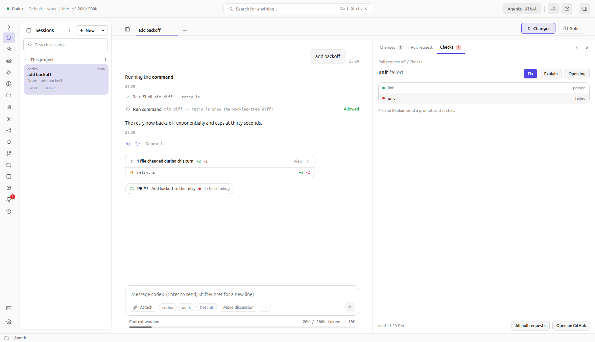
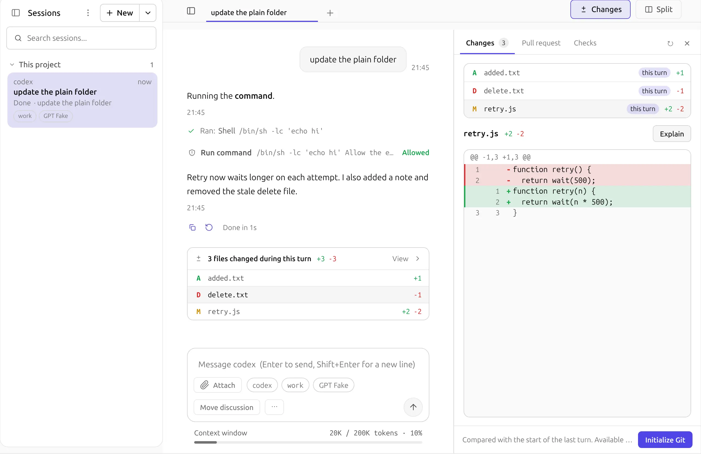
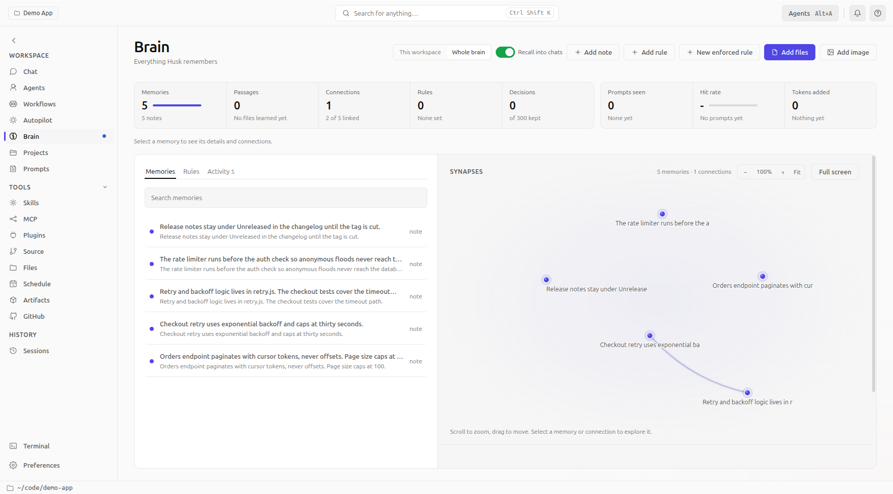
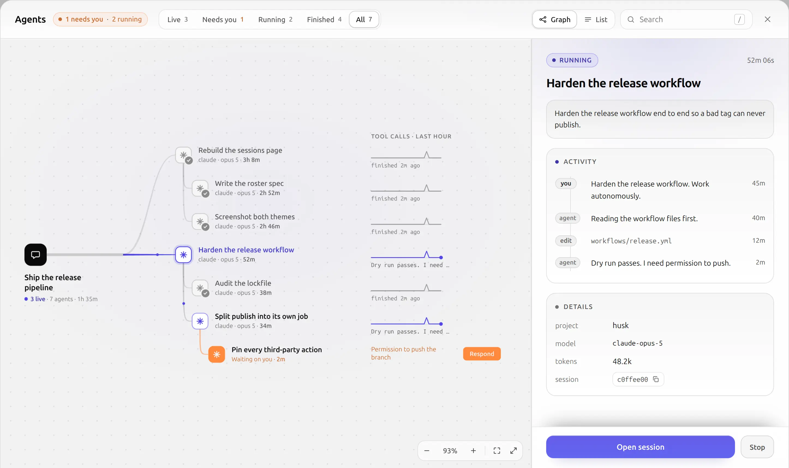
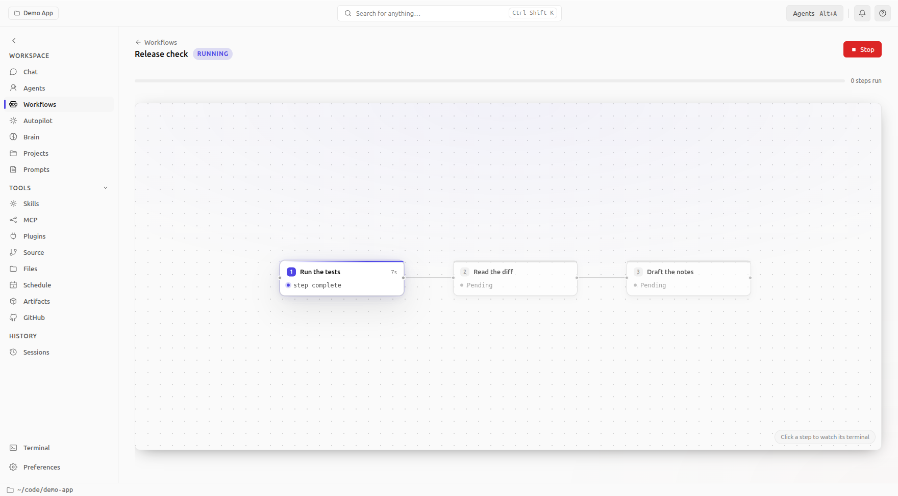
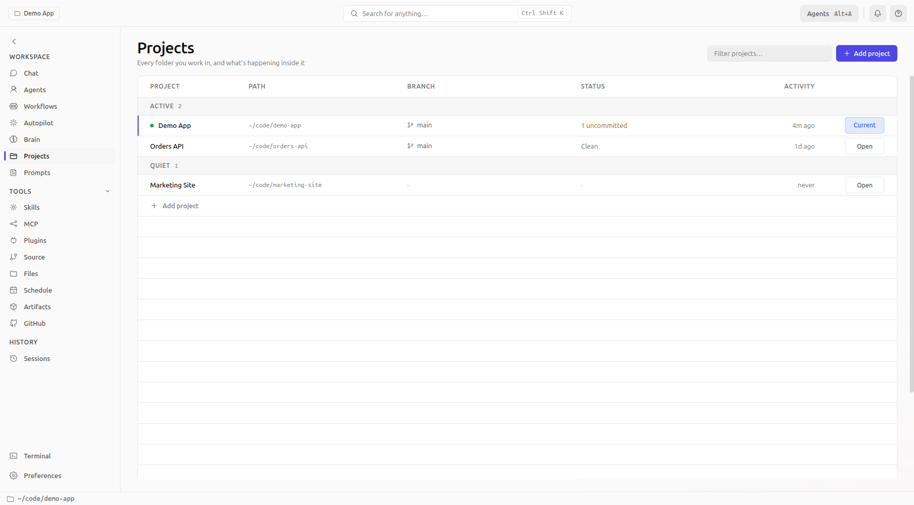
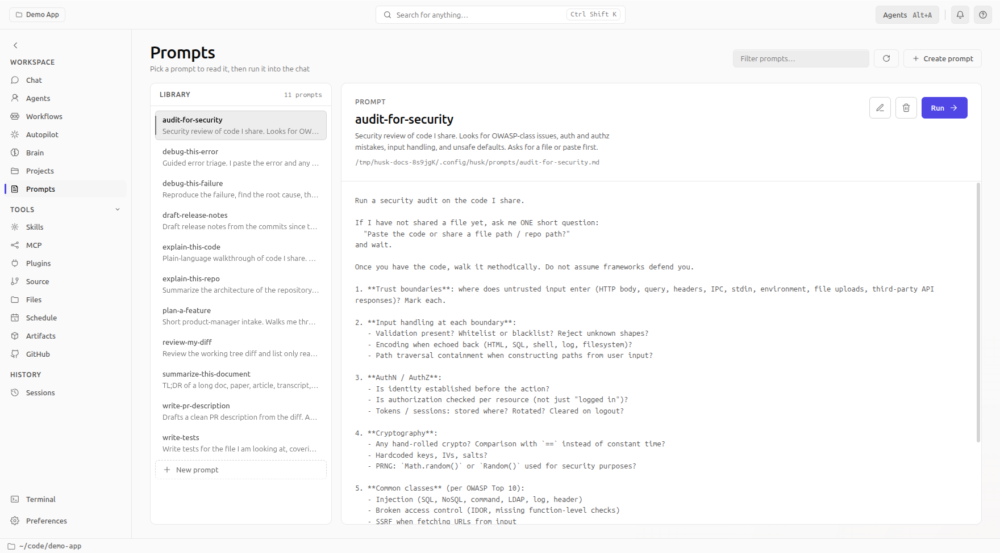
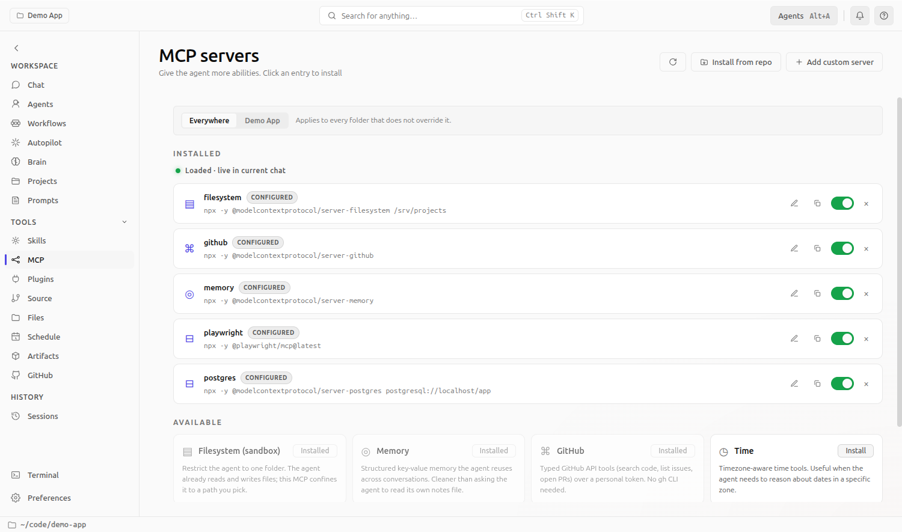
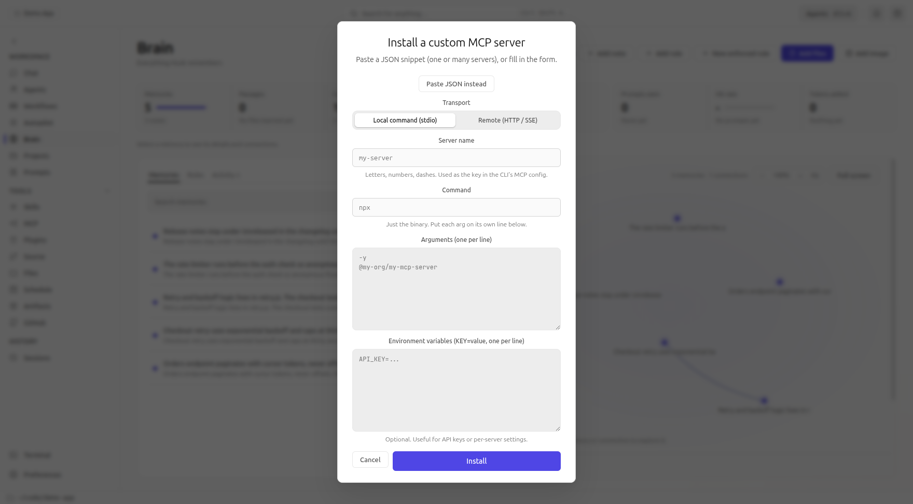

Husk wraps any terminal-based AI coding agent in a clean window: a native chat with every session one click away, a model picker, drag-drop files and images, workflows, skills, and MCP. Bring your own agent. Install in one line.
curl -fsSL https://dorshaer.github.io/Husk/install.sh | bash
irm https://dorshaer.github.io/Husk/install.ps1 | iex
CLI agents are powerful and free, but they live in a black-on-black terminal that newcomers find intimidating and easy to lose work in. Husk keeps the agent exactly as it is and adds native chat, turn-by-turn change review, task routing, and help that works offline.
Or any other agent. If it runs in a terminal, it runs in Husk.









Streamed replies, tool calls that open into their diff, permission cards and a model picker, with every past session one click away beside the thread.
A real shell in your project, in tabs.
Hand an agent a goal or split it across a team. Choose a CLI and model for each job role, or let Auto by Husk route the work. Review a saved run and its changes before applying or discarding them.
Run two chats side by side.
Read the working-tree diff, stage a file or an individual change, and commit.
Drag-drop file context, with a tree view of your working directory.
The open pull requests and issues for the current project, with their checks, labels and review state.
Run a workflow or an autopilot goal on a recurrence.
A ledger of every workflow and autopilot run with its outcome, time, tokens and cost.
Resume any prior agent session. Group the roster into folders you name.
The welcome tour helps you choose installed CLIs and an appearance. Choose the Glass theme and chat defaults in Preferences; bundled setup and troubleshooting help work offline. Launch checks run in the background to keep the window responsive.
Pick your platform. The one-liner auto-detects and installs the right build.
Debian/Ubuntu gets the signed apt repo (so apt upgrade keeps Husk current); Fedora gets the .rpm, other Linux the AppImage, macOS the .dmg. Every download is checked against the release SHA256SUMS before it runs.
# Linux and macOS
curl -fsSL https://dorshaer.github.io/Husk/install.sh | bash# Windows, in PowerShell
irm https://dorshaer.github.io/Husk/install.ps1 | iexAdd the signed repository once, then install and stay current with apt upgrade.
curl -fsSL https://dorshaer.github.io/Husk/husk.gpg | sudo tee /usr/share/keyrings/husk.gpg > /dev/null
echo "deb [signed-by=/usr/share/keyrings/husk.gpg] https://dorshaer.github.io/Husk/apt stable main" | sudo tee /etc/apt/sources.list.d/husk.list
sudo apt update && sudo apt install huskPrefer a manual install? Grab a file from the latest release.
# Debian/Ubuntu, manual .deb
sudo dpkg -i husk-v*-linux-amd64.deb || sudo apt -f install
# Portable AppImage (no root)
chmod +x husk-v*-linux-x86_64.AppImage && ./husk-v*-linux-x86_64.AppImage
# From source
git clone https://github.com/DorShaer/Husk.git && cd Husk && ./installer/install.shThe one-liner fetches and installs the right .dmg for your chip. Or download it and drag Husk to Applications.
# One line (Apple Silicon or Intel, auto-detected)
curl -fsSL https://dorshaer.github.io/Husk/install.sh | bash
# If macOS still blocks the app on first launch
xattr -dr com.apple.quarantine /Applications/Husk.appDownloads the installer for your machine, verifies it against the release SHA256SUMS, and runs it. No git, no Node, no build tools.
irm https://dorshaer.github.io/Husk/install.ps1 | iexHusk for Windows is not code-signed yet, so SmartScreen may warn about an unknown publisher. The installer is checksum-verified before it runs, and you can check the hash yourself against SHA256SUMS in the release.
Grab the -win-x64.exe from the latest release and run it. To install unattended:
& ([scriptblock]::Create((irm https://dorshaer.github.io/Husk/install.ps1))) -Silent